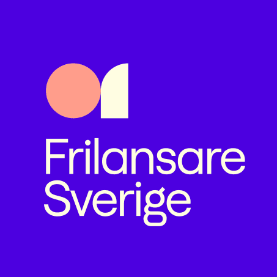

Jag skriver om egenföretagande, frilans, tech och om att bygga egna techbolag och produkter, och jag publicerar artiklar och annat innehåll löpande. Prenumerera på mitt nyhetsbrev så missar du inget.
Prenumerera på mitt nyhetsbrev så får du veta före alla andra när jag publicerar något nytt.
Min första bok är här! Den heter "Bli Egen" och bygger på min artikel Frilansarguiden, men med uppdaterat och utökat material. Boken är skriven för den svenska marknaden. Köp den här: Bli egen.

Min podd för techskapare. Jag intervjuar grundare av lönsamma techbolag om vägen till den första betalande kunden och mycket mer. Podden är pausad just nu, men alla avsnitt finns på techskaparna.se.

Bolaget som jag har grundat och är delägare och CPO i. Flowby bygger mobila lösningar för fysiska köer. Läs mer på flowby.io.

Ett öppet, transparent och anonymt forum på webben om frilans och tech. Ställ gärna frågor och skriv svar :) Alla är välkomna till forum Frilans & Tech!

Jag var med och byggde Frilansare Sverige, Sveriges största Slack-community för frilansare och egenföretagare, från ett par hundra till 3 300 medlemmar, och var admin 2018–2026. Här knyter frilansare kontakter och delar kunskap och uppdrag. Communityn hålls fri från kommersiella intressen, så bara oberoende frilansare är välkomna. Ansök om medlemskap på frilansaresverige.se.

Jag heter Anna Leijon och är ingenjör från KTH, egenföretagare och i dag delägare och CDMO (ansvarig för IT och marknadsföring) på Sveriges största företag för egenföretagare, Kvadrat. Jag brinner för entreprenörskap och tech, egenföretagande och frilansande och kallas ibland för Sveriges frilansdrottning.
Jag brinner också för att bygga egna techprodukter och bolag, för att skriva (se mina senaste artiklar på annaleijon.se/writings), för löpning och för gaming (särskilt Dota 2). Jag finns i flera sociala medier, och alla är länkade nedan.
Industriell ekonomi med inriktning tillämpad matematik – optimeringslära och systemteori
Utbytesstudier i tillämpad matematik
Jag är stolt över de samarbeten jag har haft med olika företag och organisationer. Här är några av dem:
- Gäst i podden Kodsnack, avsnitt 449
- Gäst i podden Wetal, avsnitt 4
- Min artikel publicerad av IT-Mediagruppen
- Gäst i podden Kodsnack, avsnitt 414
- Gäst i Konsultpodden, avsnitt 18
- Gästblogg hos Cinode
- Vårt tevarumärke Téamo hos Ehandel.se
- Gästblogg hos Businesswomen.se
- Min artikel publicerad av KTH Executive School
- Min artikel publicerad av Makeitnew.io
Min fantastiska lejonlogga.